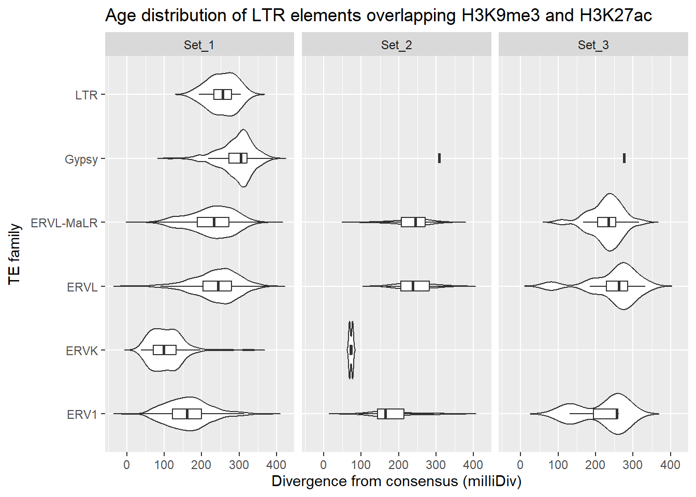

H3K9me3 and TE overlap
Renee Matthews
2026-02-02
Last updated: 2026-02-02
Checks: 7 0
Knit directory: DXR_continue/
This reproducible R Markdown analysis was created with workflowr (version 1.7.1). The Checks tab describes the reproducibility checks that were applied when the results were created. The Past versions tab lists the development history.
Great! Since the R Markdown file has been committed to the Git repository, you know the exact version of the code that produced these results.
Great job! The global environment was empty. Objects defined in the global environment can affect the analysis in your R Markdown file in unknown ways. For reproduciblity it’s best to always run the code in an empty environment.
The command set.seed(20250701) was run prior to running
the code in the R Markdown file. Setting a seed ensures that any results
that rely on randomness, e.g. subsampling or permutations, are
reproducible.
Great job! Recording the operating system, R version, and package versions is critical for reproducibility.
Nice! There were no cached chunks for this analysis, so you can be confident that you successfully produced the results during this run.
Great job! Using relative paths to the files within your workflowr project makes it easier to run your code on other machines.
Great! You are using Git for version control. Tracking code development and connecting the code version to the results is critical for reproducibility.
The results in this page were generated with repository version a086e9a. See the Past versions tab to see a history of the changes made to the R Markdown and HTML files.
Note that you need to be careful to ensure that all relevant files for
the analysis have been committed to Git prior to generating the results
(you can use wflow_publish or
wflow_git_commit). workflowr only checks the R Markdown
file, but you know if there are other scripts or data files that it
depends on. Below is the status of the Git repository when the results
were generated:
Ignored files:
Ignored: .Rhistory
Ignored: .Rproj.user/
Ignored: data/Bed_exports/
Ignored: data/Cormotif_data/
Ignored: data/DER_data/
Ignored: data/Other_paper_data/
Ignored: data/RDS_files/
Ignored: data/TE_annotation/
Ignored: data/alignment_summary.txt
Ignored: data/all_peak_final_dataframe.txt
Ignored: data/cell_line_info_.tsv
Ignored: data/full_summary_QC_metrics.txt
Ignored: data/motif_lists/
Ignored: data/number_frag_peaks_summary.txt
Untracked files:
Untracked: H3K27ac_all_regions_test.bed
Untracked: H3K27ac_consensus_clusters_test.bed
Untracked: analysis/ATAC_integration_data1.Rmd
Untracked: analysis/GREAT_H3K27ac.Rmd
Untracked: analysis/H3K27ac_ChromHMM_FC.Rmd
Untracked: analysis/H3K27ac_cisRE.Rmd
Untracked: analysis/H3K27me3_TE_investigation.Rmd
Untracked: analysis/H3K36me3_TE_investigation.Rmd
Untracked: analysis/Top2a_Top2b_expression.Rmd
Untracked: analysis/maps_and_plots.Rmd
Untracked: analysis/proteomics.Rmd
Untracked: other_analysis/
Unstaged changes:
Modified: analysis/H3K27ac_RNA_integration.Rmd
Modified: analysis/H3K27ac_TF_motifs.Rmd
Modified: analysis/dual_histone_TE_investigation.Rmd
Modified: analysis/final_analysis.Rmd
Modified: analysis/index.Rmd
Modified: analysis/summit_files_processing.Rmd
Note that any generated files, e.g. HTML, png, CSS, etc., are not included in this status report because it is ok for generated content to have uncommitted changes.
These are the previous versions of the repository in which changes were
made to the R Markdown
(analysis/H3K9me3_TE_investigation.Rmd) and HTML
(docs/H3K9me3_TE_investigation.html) files. If you’ve
configured a remote Git repository (see ?wflow_git_remote),
click on the hyperlinks in the table below to view the files as they
were in that past version.
| File | Version | Author | Date | Message |
|---|---|---|---|---|
| Rmd | a086e9a | reneeisnowhere | 2026-02-02 | updates for H3K9me3 |
library(tidyverse)
library(GenomicRanges)
library(plyranges)
library(genomation)
library(readr)
library(rtracklayer)
library(stringr)
library(ggrepel)
library(DT)
library(ChIPseeker)
library(ggVennDiagram)
library(smplot2)First steps: breakdown repeatmasker into groups and pull out the ones by each class I am interested in.
repeatmasker <- read_delim("data/Other_paper_data/repeatmasker_20250911.txt",
delim = "\t", escape_double = FALSE,
trim_ws = TRUE)
colnames(repeatmasker) [1] "#bin" "swScore" "milliDiv" "milliDel" "milliIns" "genoName"
[7] "genoStart" "genoEnd" "genoLeft" "strand" "repName" "repClass"
[13] "repFamily" "repStart" "repEnd" "repLeft" "id" autosomes <- paste0("chr", 1:22)
repeatmasker_clean <- repeatmasker %>% mutate(
strand = ifelse(strand == "C", "-", "+")
) %>%
mutate(
start = genoStart + 1,
end = genoEnd)%>%
mutate(repFamily= str_remove(repFamily, "\\?$")) %>%
dplyr::filter(genoName %in% autosomes) %>%
mutate(RM_id=paste0(genoName,":",start,"-",end,":",id))
rpt_split <- split(repeatmasker_clean, repeatmasker_clean$repClass)
rpt_split_gr_list <- lapply(rpt_split, function(df) {
GRanges(
seqnames = df$genoName,
ranges = IRanges(start = df$start, end = df$end),
strand = df$strand,
repName = df$repName,
repClass = df$repClass,
repFamily = df$repFamily,
swScore = df$swScore,
milliDiv = df$milliDiv,
milliDel = df$milliDel,
milliIns = df$milliIns,
RM_id = df$RM_id
)
})SINE_gr <- rpt_split_gr_list$SINE
SINE_df <- SINE_gr %>%
as.data.frame()
SINE_split_df <- split(SINE_df, SINE_df$repFamily)
LINE_gr <- rpt_split_gr_list$LINE
LINE_df <- LINE_gr %>%
as.data.frame()
LINE_split_df <- split(LINE_df, LINE_df$repFamily)
LTR_gr <- rpt_split_gr_list$LTR
LTR_df <- LTR_gr %>%
as.data.frame()
LTR_split_df <- split(LTR_df, LTR_df$repFamily)
SVA_gr <- rpt_split_gr_list$Retroposon
SVA_df <- SVA_gr %>%
as.data.frame()
SVA_split_df <- split(SVA_df, SVA_df$repFamily)
DNA_gr <- rpt_split_gr_list$DNA
DNA_df <- DNA_gr %>%
as.data.frame()
DNA_split_df <- split(DNA_df, DNA_df$repFamily)H3K9me3_summit_gr <- readRDS("data/RDS_files/H3K9me3_complete_summit_gr.RDS")
peakAnnoList_H3K27ac <- readRDS("data/motif_lists/H3K27ac_annotated_peaks.RDS")
peakAnnoList_H3K9me3 <- readRDS("data/motif_lists/H3K9me3_annotated_peaks.RDS")
H3K27ac_lookup <- imap_dfr(peakAnnoList_H3K27ac[1:3], ~
tibble(Peakid = .x@anno$Peakid, cluster = .y))
H3K9me3_lookup <- imap_dfr(peakAnnoList_H3K9me3[1:3], ~
tibble(Peakid = .x@anno$Peakid, cluster = .y))
H3K27ac_sets_gr <- lapply(peakAnnoList_H3K27ac, function(df) {
as_granges(df)
})
H3K9me3_sets_gr <- lapply(peakAnnoList_H3K9me3, function(df) {
as_granges(df)
})
##assigning Peakid as name of summit region
mcols(H3K9me3_summit_gr)$name <- mcols(H3K9me3_summit_gr)$Peakid
comparisons <- tibble(
cluster2 = c("Set_2", "Set_3"),
cluster1 = c("Set_1", "Set_1")
)H3K9me3_toplist <- readRDS( "data/DER_data/H3K9me3_toplist_nooutlier.RDS")
H3K27ac_toplist <- readRDS( "data/DER_data/H3K27ac_toplist.RDS")
H3K27ac_toptable_list <- bind_rows(H3K27ac_toplist, .id = "group")
H3K9me3_toptable_list <- bind_rows(H3K9me3_toplist, .id = "group")
K9me3_lfctable <- H3K9me3_toptable_list %>%
dplyr::select(group,genes, logFC) %>%
pivot_wider(.,id_cols = genes, names_from = group, values_from = logFC)
K27ac_lfctable <- H3K27ac_toptable_list %>%
dplyr::select(group,genes, logFC) %>%
pivot_wider(.,id_cols = genes, names_from = group, values_from = logFC)
cluster_colors <- c("Set_1" = "#d93e40","Set_2" = "#1c9f50","Set_3" = "#3570b3","NA" ="grey70")# Generic pairwise Fisher test
test_pair_TE_generic <- function(df_long, te_name, cluster1, cluster2) {
sub_df <- df_long %>%
filter(TE_type == te_name) %>%
complete(
cluster = c(cluster1, cluster2),
status = c("TE", "not_TE"),
fill = list(count = 0))
# enforce fixed order
status_levels <- c("TE", "not_TE")
# assume "status" column has TE vs wnot_TE automatically
statuses <- unique(sub_df$status)
if(length(statuses) != 2) {
# ensure we have exactly two categories, fill missing with 0
sub_df <- sub_df %>%
complete(cluster, status, fill = list(count = 0))
statuses <- unique(sub_df$status)
}
# extract counts for cluster1
c1_counts <- sub_df %>%
filter(cluster == cluster1) %>%
arrange(factor(status, levels = status_levels)) %>% # ensure same order
pull(count)
# extract counts for cluster2
c2_counts <- sub_df %>%
filter(cluster == cluster2) %>%
arrange(factor(status, levels = status_levels)) %>%
pull(count)
# build 2x2 matrix
mat <- matrix(
c(c2_counts, c1_counts),
nrow = 2,
byrow = TRUE,
dimnames = list(
cluster = c(cluster2, cluster1),
category = status_levels
)
)
ft <- tryCatch(
fisher.test(mat, workspace = 2e8),
error = function(e) fisher.test(mat, simulate.p.value = TRUE, B = 1e5)
)
tibble(
TE_type = te_name,
comparison = paste(cluster2, "vs", cluster1),
odds_ratio = ft$estimate,
lower_CI = ft$conf.int[1],
upper_CI = ft$conf.int[2],
p_value = ft$p.value
)
}SINE
Overlapping SINE family with ROIs
sine_hits <- findOverlaps(H3K9me3_sets_gr$all_H3K9me3, SINE_gr, ignore.strand = TRUE)
SINE_overlap_df <- tibble(
peak_row = queryHits(sine_hits),
Peakid = H3K9me3_sets_gr$all_H3K9me3$Peakid[queryHits(sine_hits)],
cluster = H3K9me3_sets_gr$all_H3K9me3$cluster[queryHits(sine_hits)],
repClass = SINE_gr$repClass[subjectHits(sine_hits)],
repName = SINE_gr$repName[subjectHits(sine_hits)],
TE_type = ifelse(
SINE_gr$repFamily[subjectHits(sine_hits)] == "SVA",
SINE_gr$repName[subjectHits(sine_hits)],
SINE_gr$repFamily[subjectHits(sine_hits)]
),
milliDiv = SINE_gr$milliDiv[subjectHits(sine_hits)],
milliDel = SINE_gr$milliDel[subjectHits(sine_hits)],
milliIns = SINE_gr$milliIns[subjectHits(sine_hits)]
)
SINE_overlap_df %>%
dplyr::left_join(H3K9me3_lookup) %>%
dplyr::filter(cluster %in% c("Set_1","Set_2","Set_3")) %>%
ggplot(., aes(x = TE_type, y = milliDiv)) +
geom_violin(trim = FALSE) +
geom_boxplot(width = 0.15, outlier.shape = NA) +
coord_flip() +
labs(
y = "Divergence from consensus (milliDiv)",
x = "TE family",
title = "Age distribution of SINE elements overlapping H3K9me3"
)+
facet_wrap(~cluster)
SINE_overlap_df %>%
dplyr::left_join(H3K9me3_lookup) %>%
dplyr::filter(cluster %in% c("Set_1","Set_2","Set_3")) %>%
ggplot(., aes(x = cluster, y = milliDiv)) +
geom_violin(trim = FALSE) +
geom_boxplot(width = 0.15, outlier.shape = NA) +
coord_flip() +
labs(
y = "Divergence from consensus (milliDiv)",
x = "TE family",
title = "Age distribution of SINE elements overlapping H3K9me3"
)+
facet_wrap(~repName)
LINE
Overlapping LINE family with ROIs
LINE_hits <- findOverlaps(H3K9me3_sets_gr$all_H3K9me3, LINE_gr, ignore.strand = TRUE)
LINE_overlap_df <- tibble(
peak_row = queryHits(LINE_hits),
Peakid = H3K9me3_sets_gr$all_H3K9me3$Peakid[queryHits(LINE_hits)],
cluster = H3K9me3_sets_gr$all_H3K9me3$cluster[queryHits(LINE_hits)],
repClass = LINE_gr$repClass[subjectHits(LINE_hits)],
repName = LINE_gr$repName[subjectHits(LINE_hits)],
TE_type = ifelse(
LINE_gr$repFamily[subjectHits(LINE_hits)] == "SVA",
LINE_gr$repName[subjectHits(LINE_hits)],
LINE_gr$repFamily[subjectHits(LINE_hits)]
),
milliDiv = LINE_gr$milliDiv[subjectHits(LINE_hits)],
milliDel = LINE_gr$milliDel[subjectHits(LINE_hits)],
milliIns = LINE_gr$milliIns[subjectHits(LINE_hits)]
)
LINE_overlap_df %>%
dplyr::left_join(H3K9me3_lookup) %>%
dplyr::filter(cluster %in% c("Set_1","Set_2","Set_3")) %>%
ggplot(., aes(x = TE_type, y = milliDiv)) +
geom_violin(trim = FALSE) +
geom_boxplot(width = 0.15, outlier.shape = NA) +
coord_flip() +
labs(
y = "Divergence from consensus (milliDiv)",
x = "TE family",
title = "Age distribution of LINE elements overlapping H3K9me3"
)+
facet_wrap(~cluster)
LTR
Overlapping LTR family with ROIs
LTR_hits <- findOverlaps(H3K9me3_sets_gr$all_H3K9me3, LTR_gr, ignore.strand = TRUE)
LTR_overlap_df <- tibble(
peak_row = queryHits(LTR_hits),
Peakid = H3K9me3_sets_gr$all_H3K9me3$Peakid[queryHits(LTR_hits)],
cluster = H3K9me3_sets_gr$all_H3K9me3$cluster[queryHits(LTR_hits)],
repClass = LTR_gr$repClass[subjectHits(LTR_hits)],
repName = LTR_gr$repName[subjectHits(LTR_hits)],
RM_id = LTR_gr$RM_id[subjectHits(LTR_hits)],
TE_type = ifelse(
LTR_gr$repFamily[subjectHits(LTR_hits)] == "SVA",
LTR_gr$repName[subjectHits(LTR_hits)],
LTR_gr$repFamily[subjectHits(LTR_hits)]
),
milliDiv = LTR_gr$milliDiv[subjectHits(LTR_hits)],
milliDel = LTR_gr$milliDel[subjectHits(LTR_hits)],
milliIns = LTR_gr$milliIns[subjectHits(LTR_hits)]
)
LTR_overlap_df %>%
dplyr::left_join(H3K9me3_lookup) %>%
dplyr::filter(cluster %in% c("Set_1","Set_2","Set_3")) %>%
ggplot(., aes(x = TE_type, y = milliDiv)) +
geom_violin(trim = FALSE) +
geom_boxplot(width = 0.15, outlier.shape = NA) +
coord_flip() +
labs(
y = "Divergence from consensus (milliDiv)",
x = "TE family",
title = "Age distribution of LTR elements overlapping H3K9me3"
)+
facet_wrap(~cluster)
DNA
Overlapping DNA family with ROIs
DNA_hits <- findOverlaps(H3K9me3_sets_gr$all_H3K9me3, DNA_gr, ignore.strand = TRUE)
DNA_overlap_df <- tibble(
peak_row = queryHits(DNA_hits),
Peakid = H3K9me3_sets_gr$all_H3K9me3$Peakid[queryHits(DNA_hits)],
cluster = H3K9me3_sets_gr$all_H3K9me3$cluster[queryHits(DNA_hits)],
repClass = DNA_gr$repClass[subjectHits(DNA_hits)],
repName = DNA_gr$repName[subjectHits(DNA_hits)],
TE_type = ifelse(
DNA_gr$repFamily[subjectHits(DNA_hits)] == "SVA",
DNA_gr$repName[subjectHits(DNA_hits)],
DNA_gr$repFamily[subjectHits(DNA_hits)]
),
milliDiv = DNA_gr$milliDiv[subjectHits(DNA_hits)],
milliDel = DNA_gr$milliDel[subjectHits(DNA_hits)],
milliIns = DNA_gr$milliIns[subjectHits(DNA_hits)]
)
DNA_overlap_df %>%
dplyr::left_join(H3K9me3_lookup) %>%
dplyr::filter(cluster %in% c("Set_1","Set_2","Set_3")) %>%
ggplot(., aes(x = TE_type, y = milliDiv)) +
geom_violin(trim = FALSE) +
geom_boxplot(width = 0.15, outlier.shape = NA) +
coord_flip() +
labs(
y = "Divergence from consensus (milliDiv)",
x = "TE family",
title = "Age distribution of DNA elements overlapping H3K9me3"
)+
facet_wrap(~cluster)
SVA/Retroposon
Overlapping SVA family with ROIs
SVA_hits <- findOverlaps(H3K9me3_sets_gr$all_H3K9me3, SVA_gr, ignore.strand = TRUE)
SVA_overlap_df <- tibble(
peak_row = queryHits(SVA_hits),
Peakid = H3K9me3_sets_gr$all_H3K9me3$Peakid[queryHits(SVA_hits)],
cluster = H3K9me3_sets_gr$all_H3K9me3$cluster[queryHits(SVA_hits)],
repClass = SVA_gr$repClass[subjectHits(SVA_hits)],
repName = SVA_gr$repName[subjectHits(SVA_hits)],
TE_type = ifelse(
SVA_gr$repFamily[subjectHits(SVA_hits)] == "SVA",
SVA_gr$repName[subjectHits(SVA_hits)],
SVA_gr$repFamily[subjectHits(SVA_hits)]
),
milliDiv = SVA_gr$milliDiv[subjectHits(SVA_hits)],
milliDel = SVA_gr$milliDel[subjectHits(SVA_hits)],
milliIns = SVA_gr$milliIns[subjectHits(SVA_hits)]
)
SVA_overlap_df %>%
dplyr::left_join(H3K9me3_lookup) %>%
dplyr::filter(cluster %in% c("Set_1","Set_2","Set_3")) %>%
ggplot(., aes(x = TE_type, y = milliDiv)) +
geom_violin(trim = FALSE) +
geom_boxplot(width = 0.15, outlier.shape = NA) +
coord_flip() +
labs(
y = "Divergence from consensus (milliDiv)",
x = "TE family",
title = "Age distribution of SVA elements overlapping H3K9me3"
)+
facet_wrap(~cluster)
Looking for overlapping information: LTR specific
Here I am exploring H3K9me3 ROIs which overlap LTRs and also overlap H3K27ac ROIs, then exploring LFC of the H3K9me3 ROI sets across families of LTRs. First I wanted to know how many H3K9me3 ROIs overlap LTRs, and howmany of those are more than one LTR:
LTR_overlap_df %>%
count(Peakid, name = "n_peaks") %>%
count(n_peaks)# A tibble: 12 × 2
n_peaks n
<int> <int>
1 1 50846
2 2 12180
3 3 2466
4 4 575
5 5 122
6 6 33
7 7 14
8 8 11
9 9 2
10 11 2
11 12 2
12 15 1LTR_only_K27ac_peakids <- LTR_overlap_df %>% distinct(Peakid)I then overlapped ROIs with H3K9me3 ROIs to see how many unique H3K9me3 ROIs are involved.
K27ac_hits <- findOverlaps(H3K9me3_sets_gr$all_H3K9me3_regions, H3K27ac_sets_gr$all_H3K27ac, ignore.strand = TRUE)
K27ac_overlap_df <- tibble(
peak_row = queryHits(K27ac_hits),
Peakid = H3K9me3_sets_gr$all_H3K9me3_regions$Peakid[queryHits(K27ac_hits)],
cluster = H3K9me3_sets_gr$all_H3K9me3_regions$cluster[queryHits(K27ac_hits)],
ROI_K27ac = H3K27ac_sets_gr$all_H3K27ac$Peakid[subjectHits(K27ac_hits)])
K27ac_overlap_df %>%
count(Peakid, name = "n_peaks") %>%
count(n_peaks)# A tibble: 4 × 2
n_peaks n
<int> <int>
1 1 49684
2 2 397
3 3 7
4 4 1K27ac_only_K9me3_peakids <- K27ac_overlap_df %>% distinct(Peakid)Now to filter and connect H3K9me3 ROIs, that overlap LTRs and at least one H3K9me3
LTR_overlap_df %>%
dplyr::filter(Peakid %in% K27ac_only_K9me3_peakids$Peakid) %>% distinct(RM_id)# A tibble: 6,368 × 1
RM_id
<chr>
1 chr1:1003500-1003623:1
2 chr1:1005447-1005607:1
3 chr1:1017170-1018876:1
4 chr1:1235837-1235999:1
5 chr1:1259547-1259908:1
6 chr1:1382090-1382288:1
7 chr1:2097759-2098300:2
8 chr1:2108760-2108974:2
9 chr1:2115428-2116169:2
10 chr1:2124513-2124680:2
# ℹ 6,358 more rowsLFC of those regions
LTR_overlap_df %>%
dplyr::filter(Peakid %in% K27ac_only_K9me3_peakids$Peakid) %>%
left_join(., H3K27ac_lookup) %>%
left_join(., K9me3_lfctable, by = c("Peakid"="genes")) %>%
group_by(TE_type) %>%
tally() %>%
ungroup() %>%
DT::datatable(
rownames = FALSE,
caption = htmltools::tags$caption(
style = "caption-side: top; text-align: left;",
"H3K9me3 LTR specific overlap counts by TE familiy which also overlap H3K27ac"),
options = list(pageLength = 10,
autoWidth = TRUE,
dom = "tip"))LTR_overlap_df %>%
dplyr::left_join(H3K9me3_lookup) %>%
dplyr::filter(Peakid %in% K27ac_only_K9me3_peakids$Peakid) %>%
dplyr::filter(cluster %in% c("Set_1","Set_2","Set_3")) %>%
ggplot(., aes(x = TE_type, y = milliDiv)) +
geom_violin(trim = FALSE) +
geom_boxplot(width = 0.15, outlier.shape = NA) +
coord_flip() +
labs(
y = "Divergence from consensus (milliDiv)",
x = "TE family",
title = "Age distribution of LTR elements overlapping H3K9me3 and H3K27ac"
)+
facet_wrap(~cluster)
LTR_K27ac_H3K9me3_lfc <- LTR_overlap_df %>%
dplyr::left_join(H3K9me3_lookup) %>%
left_join(., K9me3_lfctable, by = c("Peakid"="genes")) %>%
dplyr::filter(Peakid %in% K27ac_only_K9me3_peakids$Peakid)plot_K9_family <- function(lfc_df,
grp="H3K9me3",
repFamily,
fam_name){
lfc_df %>%
dplyr::filter(Peakid %in% K27ac_only_K9me3_peakids$Peakid) %>%
dplyr::filter(.data$TE_type %in% fam_name) %>%
dplyr::filter(cluster != "NA") %>%
pivot_longer(.,cols=c(starts_with(grp)), names_to="group", values_to = "LFC") %>%
group_by(cluster, group) %>%
summarise(median_abs_LFC = median(abs(LFC), na.rm = TRUE),
.groups = "drop")%>%
mutate(time=str_remove(group,grp))%>%
mutate(time=factor(time, levels=c("_24T","_24R","_144R"))) %>%
ggplot(., aes(x=time, y=median_abs_LFC, group=cluster, color=cluster))+
geom_point(size=4)+
geom_line(aes(alpha = 0.8, linewidth = 4))+
theme_bw()+
ggtitle(paste0(grp," absolute LFC overlapping ",repFamily,":",fam_name))
}plot_K9_family(LTR_K27ac_H3K9me3_lfc,"H3K9me3","LTR","ERV1")+
scale_color_manual(values = cluster_colors, drop = FALSE)
plot_K9_family(LTR_K27ac_H3K9me3_lfc,"H3K9me3","LTR","ERVK")+
scale_color_manual(values = cluster_colors, drop = FALSE)
plot_K9_family(LTR_K27ac_H3K9me3_lfc,"H3K9me3","LTR","ERVL")+
scale_color_manual(values = cluster_colors, drop = FALSE)
plot_K9_family(LTR_K27ac_H3K9me3_lfc,"H3K9me3","LTR","Gypsy")+
scale_color_manual(values = cluster_colors, drop = FALSE)
plot_K9_family(LTR_K27ac_H3K9me3_lfc,"H3K9me3","LTR","ERVL-MaLR")+
scale_color_manual(values = cluster_colors, drop = FALSE)
plot_K9_family(LTR_K27ac_H3K9me3_lfc,"H3K9me3","LTR","LTR")+
scale_color_manual(values = cluster_colors, drop = FALSE)
sessionInfo()R version 4.4.2 (2024-10-31 ucrt)
Platform: x86_64-w64-mingw32/x64
Running under: Windows 11 x64 (build 26200)
Matrix products: default
locale:
[1] LC_COLLATE=English_United States.utf8
[2] LC_CTYPE=English_United States.utf8
[3] LC_MONETARY=English_United States.utf8
[4] LC_NUMERIC=C
[5] LC_TIME=English_United States.utf8
time zone: America/Chicago
tzcode source: internal
attached base packages:
[1] grid stats4 stats graphics grDevices utils datasets
[8] methods base
other attached packages:
[1] smplot2_0.2.5 ggVennDiagram_1.5.4 ChIPseeker_1.42.1
[4] DT_0.33 ggrepel_0.9.6 rtracklayer_1.66.0
[7] genomation_1.38.0 plyranges_1.26.0 GenomicRanges_1.58.0
[10] GenomeInfoDb_1.42.3 IRanges_2.40.1 S4Vectors_0.44.0
[13] BiocGenerics_0.52.0 lubridate_1.9.4 forcats_1.0.0
[16] stringr_1.5.1 dplyr_1.1.4 purrr_1.1.0
[19] readr_2.1.5 tidyr_1.3.1 tibble_3.3.0
[22] ggplot2_3.5.2 tidyverse_2.0.0 workflowr_1.7.1
loaded via a namespace (and not attached):
[1] splines_4.4.2
[2] later_1.4.2
[3] BiocIO_1.16.0
[4] bitops_1.0-9
[5] ggplotify_0.1.2
[6] R.oo_1.27.1
[7] XML_3.99-0.18
[8] rpart_4.1.24
[9] lifecycle_1.0.4
[10] rstatix_0.7.2
[11] rprojroot_2.1.1
[12] vroom_1.6.5
[13] processx_3.8.6
[14] lattice_0.22-7
[15] crosstalk_1.2.2
[16] backports_1.5.0
[17] magrittr_2.0.3
[18] Hmisc_5.2-3
[19] sass_0.4.10
[20] rmarkdown_2.29
[21] jquerylib_0.1.4
[22] yaml_2.3.10
[23] plotrix_3.8-4
[24] httpuv_1.6.16
[25] ggtangle_0.0.7
[26] cowplot_1.2.0
[27] DBI_1.2.3
[28] RColorBrewer_1.1-3
[29] abind_1.4-8
[30] zlibbioc_1.52.0
[31] R.utils_2.13.0
[32] RCurl_1.98-1.17
[33] yulab.utils_0.2.1
[34] nnet_7.3-20
[35] rappdirs_0.3.3
[36] git2r_0.36.2
[37] GenomeInfoDbData_1.2.13
[38] enrichplot_1.26.6
[39] tidytree_0.4.6
[40] codetools_0.2-20
[41] DelayedArray_0.32.0
[42] DOSE_4.0.1
[43] tidyselect_1.2.1
[44] aplot_0.2.8
[45] UCSC.utils_1.2.0
[46] farver_2.1.2
[47] matrixStats_1.5.0
[48] base64enc_0.1-3
[49] GenomicAlignments_1.42.0
[50] jsonlite_2.0.0
[51] Formula_1.2-5
[52] tools_4.4.2
[53] treeio_1.30.0
[54] TxDb.Hsapiens.UCSC.hg19.knownGene_3.2.2
[55] Rcpp_1.1.0
[56] glue_1.8.0
[57] gridExtra_2.3
[58] SparseArray_1.6.2
[59] xfun_0.52
[60] qvalue_2.38.0
[61] MatrixGenerics_1.18.1
[62] withr_3.0.2
[63] fastmap_1.2.0
[64] boot_1.3-32
[65] callr_3.7.6
[66] caTools_1.18.3
[67] digest_0.6.37
[68] timechange_0.3.0
[69] R6_2.6.1
[70] gridGraphics_0.5-1
[71] seqPattern_1.38.0
[72] colorspace_2.1-1
[73] GO.db_3.20.0
[74] gtools_3.9.5
[75] dichromat_2.0-0.1
[76] RSQLite_2.4.3
[77] R.methodsS3_1.8.2
[78] utf8_1.2.6
[79] generics_0.1.4
[80] data.table_1.17.8
[81] httr_1.4.7
[82] htmlwidgets_1.6.4
[83] S4Arrays_1.6.0
[84] whisker_0.4.1
[85] pkgconfig_2.0.3
[86] gtable_0.3.6
[87] blob_1.2.4
[88] impute_1.80.0
[89] XVector_0.46.0
[90] htmltools_0.5.8.1
[91] carData_3.0-5
[92] pwr_1.3-0
[93] fgsea_1.32.4
[94] scales_1.4.0
[95] Biobase_2.66.0
[96] png_0.1-8
[97] ggfun_0.2.0
[98] knitr_1.50
[99] rstudioapi_0.17.1
[100] tzdb_0.5.0
[101] reshape2_1.4.4
[102] rjson_0.2.23
[103] checkmate_2.3.3
[104] nlme_3.1-168
[105] curl_7.0.0
[106] zoo_1.8-14
[107] cachem_1.1.0
[108] KernSmooth_2.23-26
[109] parallel_4.4.2
[110] foreign_0.8-90
[111] AnnotationDbi_1.68.0
[112] restfulr_0.0.16
[113] pillar_1.11.0
[114] vctrs_0.6.5
[115] gplots_3.2.0
[116] ggpubr_0.6.1
[117] promises_1.3.3
[118] car_3.1-3
[119] cluster_2.1.8.1
[120] htmlTable_2.4.3
[121] evaluate_1.0.5
[122] GenomicFeatures_1.58.0
[123] cli_3.6.5
[124] compiler_4.4.2
[125] Rsamtools_2.22.0
[126] rlang_1.1.6
[127] crayon_1.5.3
[128] ggsignif_0.6.4
[129] labeling_0.4.3
[130] ps_1.9.1
[131] getPass_0.2-4
[132] plyr_1.8.9
[133] fs_1.6.6
[134] stringi_1.8.7
[135] gridBase_0.4-7
[136] BiocParallel_1.40.2
[137] Biostrings_2.74.1
[138] lazyeval_0.2.2
[139] GOSemSim_2.32.0
[140] Matrix_1.7-3
[141] BSgenome_1.74.0
[142] hms_1.1.3
[143] patchwork_1.3.2
[144] bit64_4.6.0-1
[145] KEGGREST_1.46.0
[146] SummarizedExperiment_1.36.0
[147] broom_1.0.9
[148] igraph_2.1.4
[149] memoise_2.0.1
[150] bslib_0.9.0
[151] ggtree_3.14.0
[152] fastmatch_1.1-6
[153] bit_4.6.0
[154] ape_5.8-1